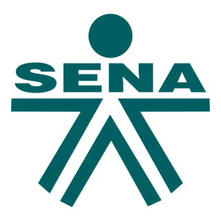
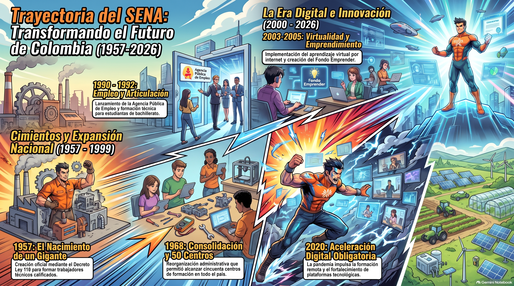

Servicio Nacional de Aprendizaje - SENA
Símbolos, historia, fundadores y directivos, misión, visión, políticas, valores, himno y evaluación • Calificación mínima aprobatoria: 90%
Registro del Aprendiz
Diligencia tus datos para identificar tu registro y resultado de evaluación al momento de imprimir.
Símbolos Institucionales del SENA
Escudo, logosímbolo y bandera: origen, significado y uso protocolario de la identidad institucional
Escudo Institucional
Emblema Heráldico • 1957Concebido desde la creación del SENA en 1957, bajo la dirección de Rodolfo Martínez Tono y el marco de la Junta Militar (Decreto-Ley 118). Sintetiza los pilares del aparato productivo nacional: la rueda dentada representa el sector industrial y de la construcción; el caduceo (vara alada con serpientes entrelazadas) representa el comercio, los servicios y la administración; y la rama de café representa el sector agrario y primario de la economía colombiana. Cumple un rol ceremonial en medallas, distinciones y actos magnos, distinto del logosímbolo moderno.

Logosímbolo Institucional
Marca Dinámica • Identidad ContemporáneaIntegra la silueta de una figura humana proyectada hacia adelante junto con la marca tipográfica SENA, representando dinamismo, evolución técnica y la centralidad del ser humano en la formación profesional integral. Los vectores orientados hacia adelante traducen el aprendizaje permanente, y la diagonal ascendente simboliza la movilidad social y la visión de futuro. Su uso es masivo y obligatorio en portales oficiales, plataformas de gestión académica (SOFIA Plus), LMS y redes institucionales.
Bandera Institucional
Protocolo y Ceremonial • 1957Estandarte de paño blanco con el escudo heráldico histórico centrado en su eje, concebido de manera paralela a la creación del SENA. El color blanco proyecta tranquilidad, paz, pureza y libertad. Se iza en actos magnos y solemnes (ceremonias de graduación, conmemoración del aniversario el 21 de junio y aperturas de sedes regionales), junto al Pabellón Nacional y la bandera regional, según la norma de precedencia patriótica.
Historia del SENA
Orígenes, contexto histórico y expansión de la institución
Orígenes
Nacimos en el año 1957, durante el gobierno de la Junta Militar -posterior a la renuncia del General Gustavo Rojas Pinilla-. mediante el Decreto-Ley 118, del 21 de junio Nuestra función fue brindar formación profesional a trabajadores, jóvenes y adultos de la industria, el comercio, el campo, la minería y la ganadería. Esta institución surgió gracias a la iniciativa del economista cartagenero Rodolfo Martínez Tono, con el valioso apoyo de los trabajadores organizados, los empresarios, la iglesia y la Organización Internacional del Trabajo.
Contexto Histórico
El SENA nació impulsado por la OIT y el espejo del SENAI brasileño para responder al modelo de industrialización por sustitución de importaciones en América Latina, bajo la Junta Militar e impulsado por Rodolfo Martínez Tono, surgió para superar el empirismo operativo en los centros fabriles emergentes de Colombia. Su innovación clave consistió en una arquitectura de financiación parafiscal basada en aportes sobre la nómina empresarial, articulando una alianza tripartita de corresponsabilidad. Así, su propósito fundacional no fue suplir mercados externos, sino estructurar un capital humano técnico nacional autónomo frente a la modernización económica del país.
Expansión
La expansión del SENA recorrió un tránsito desde los talleres operativos locales en ejes fabriles hasta una red nacional descentralizada con presencia en cada departamento. Su cobertura diversificó el foco industrial inicial hacia el comercio, los servicios, la gestión administrativa y las TIC. En lo pedagógico, evolucionó del adiestramiento empírico hacia la formación integral por competencias, uniendo lo técnico con el desarrollo humano y social. Infraestructuralmente, pasó de aulas y espacios básicos de taller a centros especializados, tecnoacademias y tecnoparques de innovación aplicada. Digitalmente, migró hacia ecosistemas masivos de gestión académica y entornos virtuales de aprendizaje colaborativo. Sistémicamente, amplió su alcance mediante la articulación con la educación media técnica, la certificación de competencias por experiencia laboral, el fomento al emprendimiento y alianzas estrechas con el sector productivo para garantizar la etapa práctica. Este despliegue consolidó a la entidad como un motor masivo de movilidad social y pertinencia técnica adaptado a las vocaciones económicas de cada región colombiana.
Línea de Tiempo: Trayectoria Histórica del SENA
Infografía detallada de la evolución y los hitos institucionales

Fundadores del SENA
Líderes visionarios que impulsaron la formación profesional en Colombia

Rodolfo Martínez Tono
Principal FundadorVisionario que impulsó la creación del SENA inspirado en el modelo de formación profesional europeo. Su liderazgo fue fundamental para establecer las bases de la institución.

Raimundo Emiliani Román
Co-fundadorMinistro de Trabajo durante la Junta Militar, jugó un papel clave en la promulgación del Decreto-Ley 118 que dio vida al SENA.

Diego Montaña Cuéllar
IdeólogoContribuyó con las bases conceptuales del modelo de formación profesional que adoptaría el SENA en sus inicios.
Directivos SENA
Estructura directiva y líneas de liderazgo institucional

Fray Ricardo Torres Castro
Director GeneralFraile de la Orden de Predicadores (Dominicos), nacido en Tunja, Boyacá. Es licenciado en Filosofía, bachiller en Teología, magíster en Administración y en Negocios Internacionales, y candidato a doctor cuenta con amplia experiencia académica y de gestón. Se ha desempeñado como rector y decano de la Universidad Santo Tomás, donde desarrolló parte importante de su trayectoria profesional.
También fue asesor del Centro Nacional de Memoria Histórica y ha desarrollado labores relacionadas con la defensa de los derechos humanos, consolidando una trayectoria vinculada a la educación, la gestión institucional y el trabajo social.

Gerardo Arturo Medina Rosas
Director Regional Distrito CapitalFisioterapeuta, Especialista en Gerencia en Salud y en Administración Pública.
Se ha desempeñado en la dirección de entidades del sector público, especialmente en el área de la salud; en instituciones de prestación de servicios y en secretarías territoriales. En la actualidad es el Subdirector del Centro de Formación de Talento Humano en Salud de la Regional Distrito Capital.
Se ha desempeñado también como docente y consultor en áreas de la protección social.

Miguel Ángel Ruiz Bohórquez
SUBDIRECTOR (E) CENTRO DE GESTIÓN ADMINISTRATIVAProfesional en Administración Pública, Especialista en Planeación Educativa y Planes de Desarrollo, y Técnico en Gestión del Talento Humano del SENA.
Su liderazgo social y vocación de servicio fortalecen el trabajo institucional, impulsando acciones con impacto y sentido humano.

Harold Iván Mera Martínez
COORDINADOR TALENTO HUMANOEconomista con énfasis en Administración de Empresas, 25 años experiencia docente y en el sector real, en: la formulación y evaluación de Planes de negocios y proyectos de inversión; el área financiera en elaboración, análisis y control de presupuestos y costos; el área administrativa en control de tiempos y movimientos, manejo de personal, producción, almacén e inventarios, logística, asesor y consultor en áreas administrativas, económicas y financieras, formulación y evaluación de proyectos de inversión, formación como instructor para la formación integral por competencias del SENA.
Caracterizado por ser una persona líder con altos valores éticos, morales y sociales, con disposición para el trabajo en equipo, proactivo y dispuesto a aceptar retos personales, profesionales y laborales.
Lideran la ejecución directa de la formación profesional Integral, programas académicos, ambientes de aprendizaje, instructores y aprendices de la coordinación.
Misión y Visión
Propósito institucional y horizonte estratégico del SENA
Misión
El SENA está encargado de cumplir la función que le corresponde al Estado de invertir en el desarrollo social y técnico de los trabajadores colombianos, ofreciendo y ejecutando la formación profesional integral, para la incorporación y el desarrollo de las personas en actividades productivas que contribuyan al desarrollo social, tecnológico y del país.
Visión
Nuestro objetivo es generar valor público y fortalecer la economía campesina, popular, verde y digital, siempre con un enfoque diferencial orientado a la construcción del cambio, la transformación productiva, la soberanía alimentaria y la consolidación de una paz total, materializando así la autonomía territorial, y la justicia social, ambiental y económica.
Objetivos Estratégicos
Inclusión social y económica: Promover la inclusión de la población con enfoque diferencial, fortaleciendo capacidades y empleabilidad para el desarrollo equitativo y de la economía popular/comunitaria.
Desarrollo sostenible territorial: Potenciar el desarrollo sostenible regional mediante el fortalecimiento productivo de la población, empresas, agremiaciones, asociaciones y cooperativas.
Gestión del capital humano: Aportar al fortalecimiento de la gestión del capital humano en el país mejorando cobertura, pertinencia y calidad de la formación.
Innovación en la prestación: Innovar en la prestación integral de servicios institucionales incrementando calidad, pertinencia y cobertura con enfoque diferencial.
Alianzas estratégicas: Contribuir a cobertura, calidad y pertinencia mediante la gestión de convenios y alianzas nacionales e internacionales.
Austeridad y eficiencia de recursos: Administrar los recursos institucionales con criterios de oportunidad, austeridad, eficiencia y eficacia.
Políticas Institucionales
Lineamientos que orientan la gestión integral del SENA
Política de Formación Profesional Integral (FPI)
Centrada en el saber hacer, desarrollo humano, técnico, tecnológico y social, orientada por análisis ocupacionales y sectoriales.
Política de Competitividad, Desarrollo Tecnológico e Innovación
Regula la inversión de recursos a través de líneas tecnológicas clave: Diseño de productos, Producción/transformación, Materiales/biotecnología, TICs e Inteligencia Artificial, Logística, Economía popular/campesina y Sociedad/cultura/pedagogía.
Política de Inclusión, Enfoque Diferencial y Poblaciones Vulnerables
Garantiza el acceso equitativo a la formación y el empleo para comunidades étnicas, víctimas, mujeres, jóvenes rurales y economías populares.
Política de Austeridad del Gasto y Equilibrio Presupuestal
Impone la ejecución a costo cero (0) y la optimización de ahorros institucionales frente a los techos fiscales.
Política de Transformación Digital y Gobierno Digital
Migración y soporte en plataformas académicas (SOFIA Plus) y analítica de datos.
Valores Institucionales
Principios que guían el actuar de la comunidad SENA
Honestidad
Actuar siempre con fundamento en la verdad, cumplimiento transparente de deberes y primacía del interés general.
Respeto
Reconocer, valorar y tratar con dignidad a toda la comunidad (aprendices, compañeros, ciudadanos) sin importar origen, labor o condición.
Compromiso
Consciencia del rol público/formativo, disposición permanente para resolver necesidades y agregar bienestar a la sociedad.
Diligencia
Cumplimiento de funciones con prontitud, destreza, eficiencia y optimización estricta de los recursos públicos.
Justicia
Actuación con imparcialidad, garantía de derechos con equidad, igualdad y cero discriminaciones.
Solidaridad
Brindar ayuda a las personas cuando lo requieren desde la pertenencia a una comunidad solidaria.
Lealtad
Obrar conforme a principios éticos, ecológicos, legales y la reserva institucional.
Video del Himno
Video oficial institucional del Himno del SENA
Himno del SENA
Letra: Luis Alfredo Sarmiento • Música: Daniel Marlez
Aprendices del SENA adelante
Por Colombia luchad con amor
Con el ánimo noble y radiante
Transformémosla en mundo mejor
De la patria el futuro destino
En las manos del joven está
El trabajo es seguro camino
Que el progreso a Colombia dará
En la forja del SENA se forman
Hombres libres que anhelan triunfar
Con la ciencia y la técnica unidas
Nuevos rumbos de paz trazarán
Hoy la patria nos grita sentida
¡Aprendices del SENA triunfad!
Solo así lograréis en la vida
Más justicia, mayor libertad
Avancemos con fuerza guerrera
¡Aprendices con firme tesón!
Que la patria en nosotros espera
Su pacífica revolución
Evaluación de Conocimientos
Pon a prueba lo aprendido sobre la información institucional del SENA. Calificación mínima aprobatoria: 90%
A. Selección múltiple (única respuesta)
Elige la única opción correcta en cada pregunta. (5 pts c/u)
1. ¿En qué año fue creado el SENA?
2. ¿Mediante qué norma se creó el SENA?
3. ¿Quién fue el principal fundador del SENA?
4. ¿Cuántos centros de formación tiene actualmente el SENA en el país?
5. ¿En qué década surgió el SENA como respuesta a la industrialización del país?
6. ¿Qué elemento del escudo institucional del SENA representa el sector agrario y primario?
7. ¿Qué figura conforma el símbolo gráfico del logosímbolo moderno del SENA?
8. ¿De qué color es el fondo de la bandera institucional del SENA?
B. Relaciona el hito con su año (listas desplegables)
Selecciona el año correcto para cada hito de la línea de tiempo. (8 pts c/u)
Fundación del SENA mediante Decreto-Ley 118
Expansión a las regiones con la apertura de centros regionales
Modernización de programas y enfoque en nuevas tecnologías
Implementación de formación virtual y atención a poblaciones vulnerables
Adaptación a la pandemia con estrategias de formación a distancia
C. Selecciona la tarjeta con la respuesta correcta
Toca la tarjeta que consideres correcta para cada pregunta. (4 pts c/u)
1. ¿Qué valor corresponde a: "Actuar siempre con fundamento en la verdad, cumplimiento transparente de deberes y primacía del interés general"?
2. ¿Qué política impulsa la migración y soporte de las plataformas académicas (SOFIA Plus) y la analítica de datos?
3. ¿Quién fue Ministro de Trabajo durante la Junta Militar y tuvo un papel clave en la promulgación del Decreto-Ley 118?
4. ¿Qué valor se refiere a la "actuación con imparcialidad, garantía de derechos con equidad, igualdad y cero discriminaciones"?
5. ¿Qué representa el caduceo (vara alada con dos serpientes entrelazadas) en el escudo institucional del SENA?
Dashboard de Resultados
Resumen visual del desempeño en la evaluación • Aprobación mínima: 90%
% de Cumplimiento por Bloque
Puntaje Global
Sin datos suficientes. Ve a la pestaña "Evaluación", responde las preguntas y haz clic en "Calcular Resultado" para ver aquí tu dashboard.